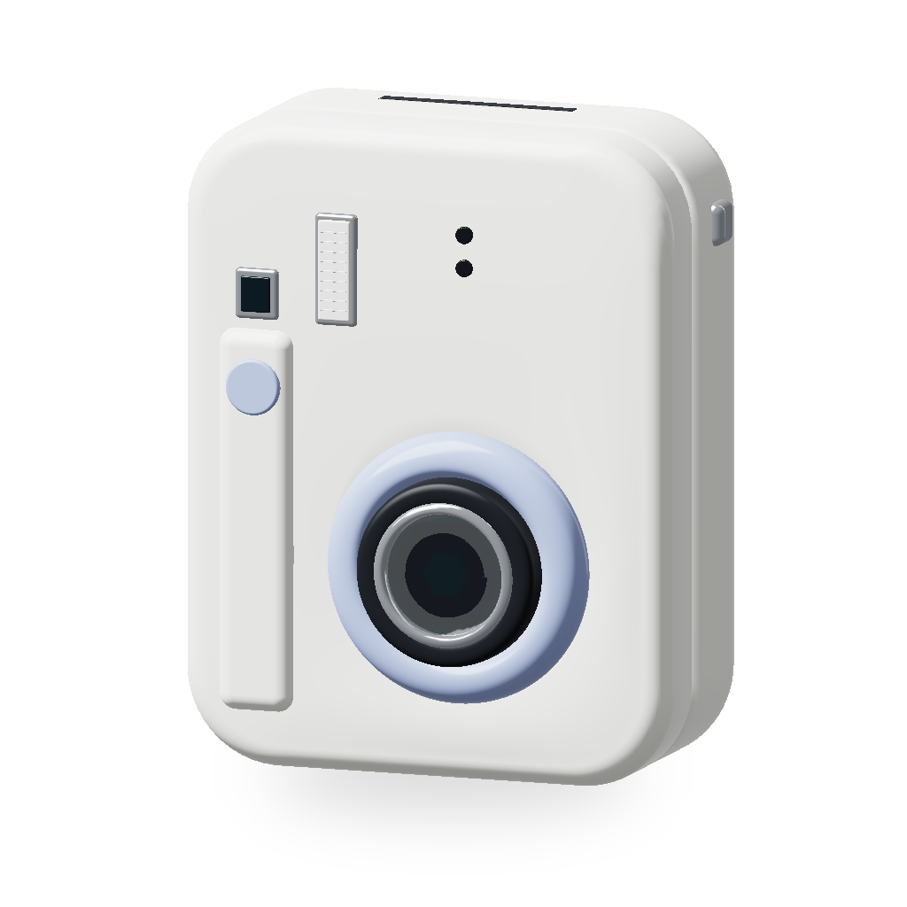

A little 


 .
.
Anywhere you build.
From a still illustration to a playful 3D object. Here’s how to bring your colors, materials and motion into your next project.

Bring your object along.
Uses your latest saved studio colors, lighting and view. Choose a platform and copy the result.
Prepare your embed
with your colors, lighting and view.
View embed code
- In Framer, insert an Embed and paste the code into its HTML field.
- For controls in Framer, create a code file, paste the downloaded Threed.tsx, then add it to your canvas.
For a still image, use Save PNG in the studio. GLB and scene JSON files do not work in a Lottie component. Read the platform guides
Choose what you need.
The format decides how your object behaves. Start with an image for a still, or an embed for real 3D interaction.
| Format | Best for | What stays editable |
|---|---|---|
| PNG Still image | Layouts, presentations and static illustrations | Size and placement in your design |
| Live 3D Website embed | Hover, loop, drag and turntable | Colors, light, shadow and motion in threed® |
| GLB 3D model | Opening the mesh in a compatible 3D editor | Geometry and named materials |
| JSON Scene recipe | Keeping your studio settings | Configuration data; not a Lottie animation |
Use it in Framer.
Drop in a still image, or keep the real 3D movement with an Embed. A downloadable code component gives you controls inside Framer too.
A still illustration
- Customize your object in the studio, then choose Save PNG → Download.
- Drag the PNG into your Framer canvas as an image. Its transparent background blends into your page.
A live 3D object
For a self-contained Framer embed, choose Save JSON → Copy code in the studio and paste it into Embed → HTML. It includes the viewer and edited model. Download remains a JSON settings file. For a smaller hosted embed and Framer property controls, follow the steps below.
- Open Prepare your embed above and choose Framer.
- Choose Still, On hover or Loop. Set the backdrop, then enter your hosted Library URL.
- Choose Copy embed code. In Framer, insert an Embed and paste the code in its HTML field.
- Give the Embed a width and height, such as 400 × 400. Preview the page and try hovering or dragging.
Want controls in Framer’s properties panel?
Choose Download Framer component in the embed tool above. Create a Framer code file, paste the full contents of Threed.tsx, then add Threed to your canvas.
The component includes object ID, body / accent / secondary colors, backdrop, Still / Hover / Loop, motion amount, mouse follow, turntable, light and shadow. Your other materials keep the saved studio values.
Download the detailed setup guideGive your Webflow site a little movement.
The hosted live 3D embed from the tool above works in a Webflow Code Embed. For a still illustration, upload the PNG as an image instead.
- Customize an object in the studio, then open Prepare your embed → Webflow above.
- Choose the motion and background, enter your hosted Library URL, then choose Copy embed code.
- In Webflow’s Add panel, add a Code Embed element. Paste the iframe code, then save and close.
- Set a height on the parent container, such as 400 px, and let the embed fill its width. Preview the page and check the published result.
Code Embed availability depends on your Webflow Site or Workspace plan. If it is unavailable, use the PNG in an Image element.
Your website. Your stack.
Use the copied iframe in HTML, React or any builder that accepts iframe embeds. The object’s viewer runs inside the embed, with its own colors, lighting and interactions.
Plain HTML
Paste the copied iframe into a container with an explicit height. The code from the studio includes the current object and your customized scene.
<div style="width:100%;height:400px">
<!-- Paste your copied threed® iframe here. -->
</div>React
Copy the URL rather than the HTML and pass it to an iframe. No Framer dependency is needed.
<iframe
src={threedEmbedUrl}
title="Interactive 3D illustration"
loading="lazy"
style={{ width: "100%", height: 400, border: 0 }}
/>Prefer to self-host the web component?
Copy viewer/ and the selected models/ files to your site. The included <little-object> element exposes materials, lighting and motion through HTML attributes and JavaScript.
One step before you publish.
The live viewer needs an online home. A localhost address only works on your own computer.
- Host the threed® site folder over HTTPS, preserving
embed.html,catalog.json,viewer/andmodels/. - Enter that public folder address in Library URL before copying the embed or downloading the component.
- Allow iframe embedding on your host. Preview on your platform, then check the published page on another device.
Use PNGs for big grids and a few live objects for moments that benefit from interaction. Live 3D needs WebGL 2. Automatic motion respects reduced-motion preferences.
If nothing appears.
I uploaded an icon to a Lottie component.
GLB models and scene JSON recipes are different formats from Lottie. A Lottie component cannot play them. Use PNG in an image layer, or the live 3D embed for movement. Renaming the file does not convert it.
About the dotLottie formatThe embed works here, but not on my published site.
Check Library URL. Replace http://localhost:8765/ with your hosted HTTPS address and copy the embed again. Confirm the host allows iframe embedding and the model paths still match the catalog.
The object is blank or too small.
Give the Embed and its parent an explicit height. Check that the live embed URL opens by itself and WebGL 2 is available. For a still image without WebGL, use Save PNG.
My colors changed after I edited the studio.
An embed stores a snapshot. Choose Apply current studio edits, then copy it again. A downloaded Framer component has its own snapshot and optional color overrides.
Where are SVG and Lottie exports?
These are shaded, editable 3D objects. The current exports are PNG, GLB and JSON scene settings, plus the live website embed. SVG path animations and Lottie animation exports are not included.
Platform logos belong to their respective owners.